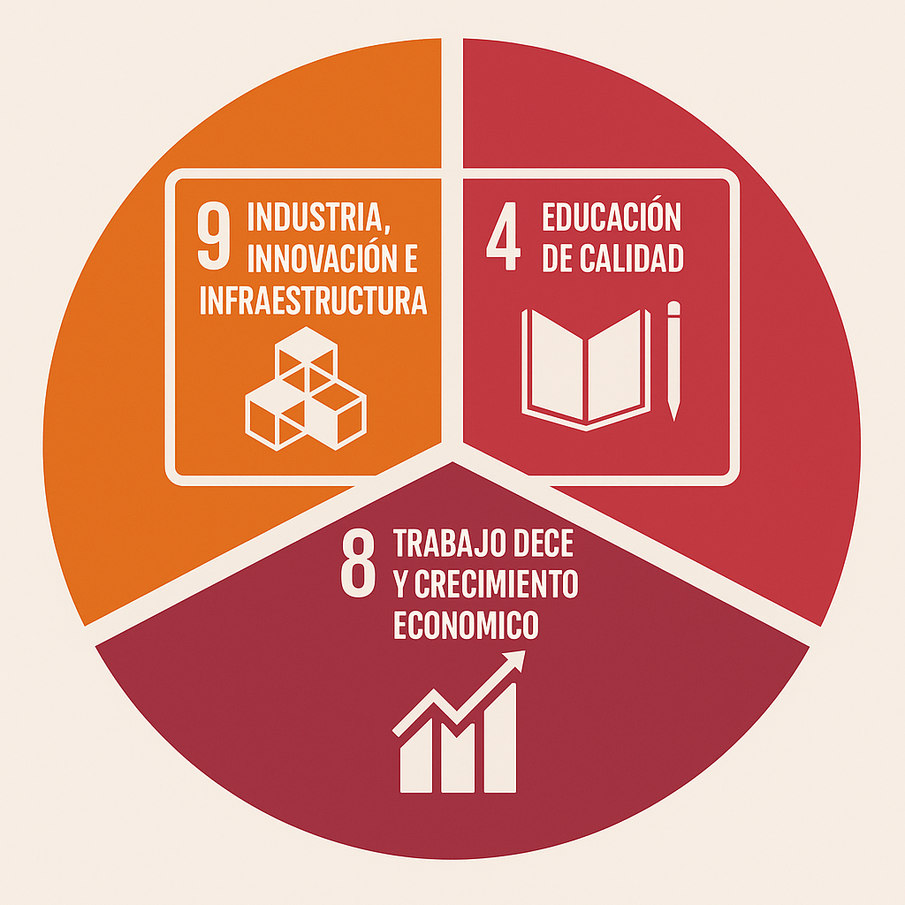

La Sostenibilidad consiste en mejorar o evitar varias acciones que hacemos a diario y que no nos damos cuenta y a la vez estamos contaminando mas de lo que pensamos.,
- Existen 3 dimensiones:
- Ambiental: Busca reducir el impacto ecológico, como reciclando los componentes
- Social: se encarga sobre todo de mejorar la vida de las personas gracias a la tecnología, como promover la educacion digital, la accesibilidad web...
- Económica: usar la tecnología de manera que ayude a ahorrar dinero, como por ejemplo usando software libre o gratuito
sobre todo para evaluar el desempeño de una empresa, a una empresa tecnologia le deberia de interesar este aspecto ya que ofrece transformar psoibles riesgos en ventajas competitivas duraderas, ayuda a alinear sus operaciones con los valores sociales y éticos
La sostenibilidad impulsa marcos internaciones, los más importantes son:
| ODS 9 | ODS 4 | ODS 8 |
|---|---|---|
| Crean plataformas, apps y sistemas que apoyan la economía digital y permiten su automatización. | Permiten el acceso al aprendizaje a distancia y ofrecen recursos para mejorar las habilidades. | Es un motor principal del crecimiento económico y la productividad. |
